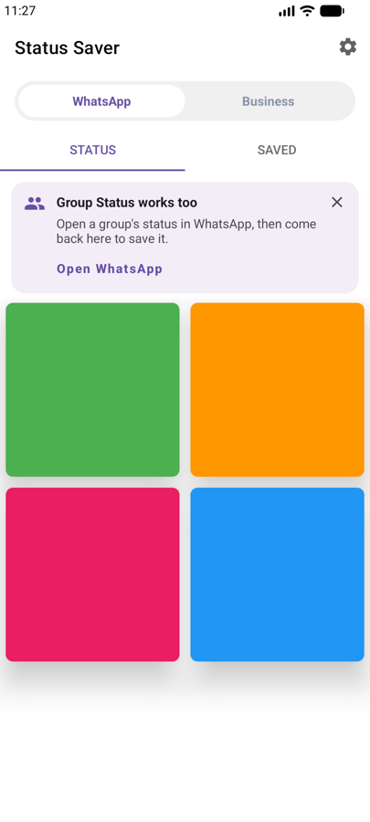

Status Saver 3.2.0 · Group Status
Sat 28 Nov 2026 · repo labmember003/WhatsStatus · issue #5✋ Your one next action
Reply “yes, upload 3.2.0” on Telegram to send the build to Play, and/or “yes, update listing” to apply the text below in Play Console. Nothing has been uploaded or changed on Play yet.Tested on the emulator · Sat 28 Nov
✓ 4 of 4 statuses shown✓ 2 from a sub-folder (new)✓ junk files skipped✓ Save → gallery + Saved tab✓ ✕ closes tip✓ “not installed” message✓ 3 unit tests pass
Green and orange = files in a sub-folder, like Group Status. The old app could not see them.

Green and orange = files in a sub-folder, like Group Status. The old app could not see them.
What changed in the app
| Change | Why |
|---|---|
| NEW Finds statuses in sub-folders of .Statuses (2 levels) | Group Status and newer WhatsApp builds can keep files in sub-folders; before, the app only looked at the top level. |
| NEW “Group Status works too” tip on the Available tab, with an Open WhatsApp button and ✕ to close (remembered) | Tells people the new WhatsApp feature works, at the moment they need it. |
| NEW Clearer empty state: “Watch a status or a Group Status in WhatsApp first…” | The old screen only said “No Status Available!”. |
| FIX Business statuses saved from full-screen view went to the normal WhatsApp Saved tab | Found while reading the code; existing bug in the live app. |
| FIX Skips .nomedia, half-downloaded and empty files | So broken tiles never appear. |
| TEXT New texts in English + 28 languages | Hindi, Spanish, Portuguese, Arabic, Indonesian, Urdu, Bengali and more. |
Version 3.2.0 (100007010). Includes the unreleased 3.1.1/3.1.2 work already on main (own Firebase, feedback email, ad consent).
Play listing draft (not published)
Rules I followed (Google Play Metadata, Impersonation and IP policies):
title ≤ 30short ≤ 80no brand in titleno “best/#1”no other apps’ namesno unattributed reviewsmust match real features
title ≤ 30short ≤ 80no brand in titleno “best/#1”no other apps’ namesno unattributed reviewsmust match real features
Title · 27/30
Status Saver & Group Status
Short description · 78/80
Save status photos, videos & Group Status updates. Repost or share in one tap.
Full description · 1907/4000
Saw a funny video or a lovely photo in someone's status? Save it before it disappears after 24 hours. Status Saver keeps the photos and videos you have watched in your chat app's status feed, so you can save them, share them or repost them to your own status. NEW: Group Status Group Status updates are statuses shared only with the members of one group. Status Saver picks them up too. Open a group's status in your chat app, come back to Status Saver, and it is there, ready to save. What you can do • Save status photos and videos to your phone's gallery • Save Group Status updates, the same way as any other status • Repost a status to your own status, or share it to any app • Works with personal and Business accounts; switch with one tap • Watch videos and view photos full-screen before you save them • Find everything you saved in the Saved tab, even offline • Saves the exact file from your phone, with no extra compression How to use it 1. Open your chat app and watch the status or Group Status you want to keep. 2. Open Status Saver. The status shows up in the Available tab. 3. Tap it, then tap Save. It goes to your gallery and the Saved tab. The first time, Status Saver asks you to pick the chat app's folder. A short guide shows you which folder to choose and which button to tap. Privacy • Everything stays on your phone. Status Saver reads only the status folder you allow, and only to show and save statuses. • No sign-up, no account, and we don't read your chats or contacts. • The app shows a small banner ad, and asks for your consent first where the law requires it. Please respect other people's content Save and share only statuses you have the right to use, and ask the owner before you repost their status. Disclaimer Status Saver is an independent app made by Falcon Tech Lab. It is not affiliated with, sponsored by or endorsed by WhatsApp LLC or Meta Platforms, Inc.
What’s new (release notes)
• New: save Group Status updates, the statuses shared with just one group • Finds statuses that newer chat app versions keep in sub-folders • Fixed: Business statuses saved from full-screen view now go to the Business Saved tab • A tip on the Available tab shows how Group Status works
Before → after
| Live now | Problem | Draft |
|---|---|---|
| Title “Status Saver & Repost for WA” | “WA” is the brand’s short name | “Status Saver & Group Status” |
| “Best tool for WA and Business” | “Best” claim + brand | No superlatives, no brand |
| “Direct Chat (No Contact Saved)” | The app has no such feature | Removed |
| “Smart Organization: photos and videos sorted” | Not in the app | Removed |
| Instagram, TikTok, Telegram named | Other companies’ brands | “share it to any app” |
| “not affiliated with WhatsApp Inc.” | Company is now WhatsApp LLC | “WhatsApp LLC or Meta Platforms, Inc.” (the only brand mention) |
What to expect
| Low | Likely | Great | |
|---|---|---|---|
| Store visitors who install (vs now) | −5% (losing “WA” in title) | ±0 | +10% (Group Status hook) |
| Time to show in search after edit | a few hours to 2 days | ||
Honest note: removing “WA” from the title may cost some searches that type “wa status saver”. It lowers the risk of a trademark takedown, which would cost everything. Re-check installs on Sat 12 Dec.